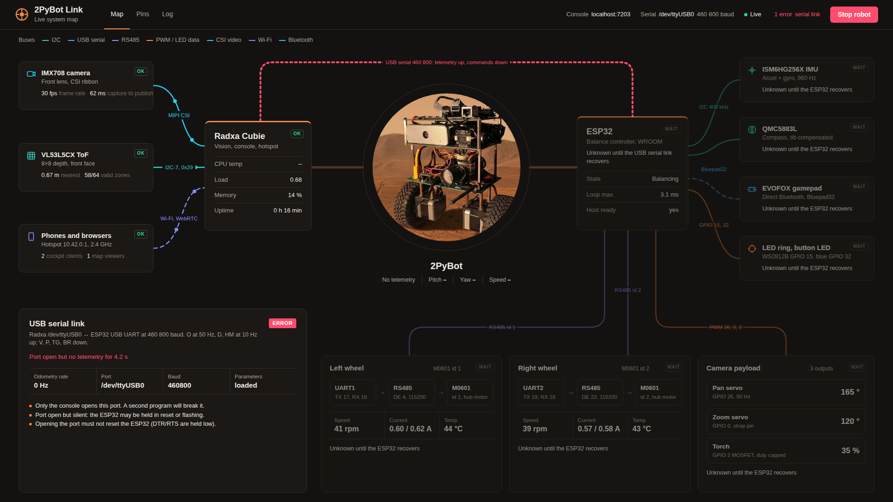
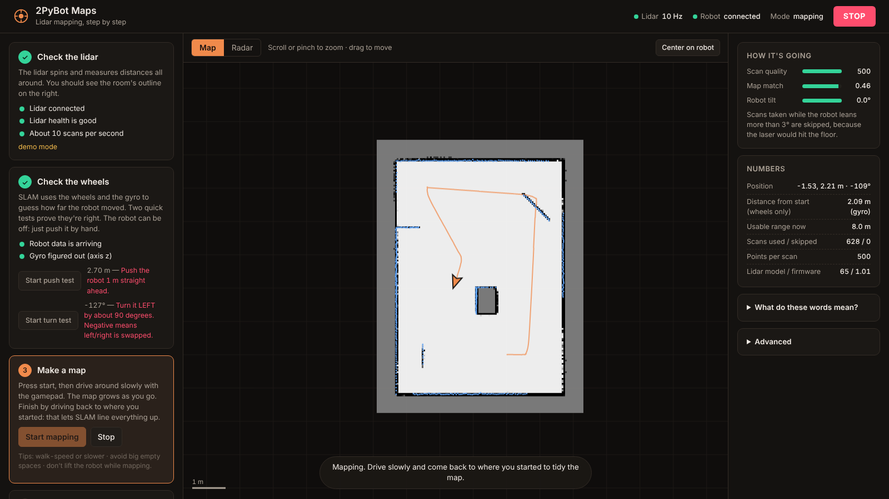
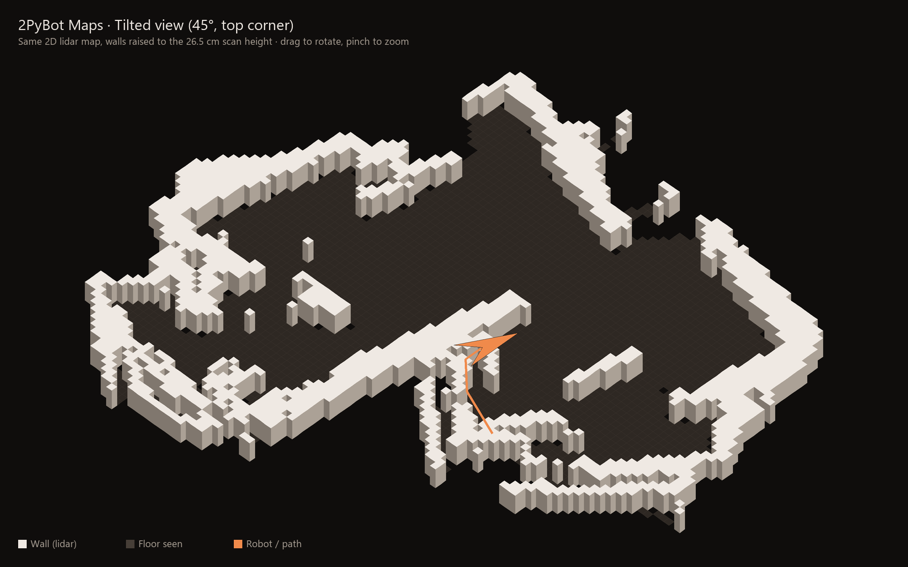
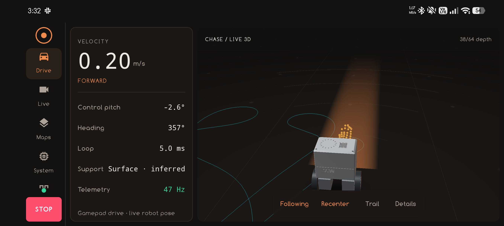
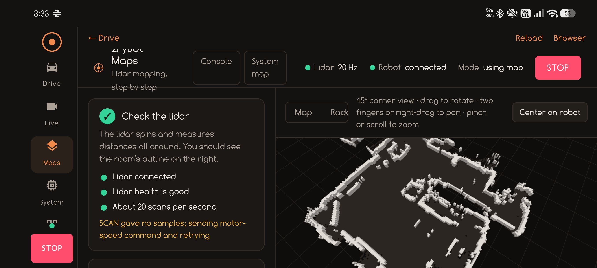

This manual explains how to set up, drive, map with and look after 2PyBot. It is written for the person operating the robot. You do not need to read code to use anything described here.
It describes the robot with controller firmware BaseLink 4.7.6 and host software 4.7.6. The firmware version is shown in the console header, on the 2pybot dashboard and in the first lines of the controller log.
| Convention | Meaning |
|---|---|
| Bold | A button, key or screen element, for example START or Save map. |
monospace | Something you type, a setting name or a file path. |
| Ring diagrams | The LED ring seen from above. The orange marker is the front of the robot; LEDs are numbered clockwise. |
| Speeds | Metres per second (m/s). A person walks at about 1.3 m/s. |
| Document | For |
|---|---|
| User manual (this document) | Operating the robot day to day. |
| Hardware manual (HW-2PB-004) | Mechanics, electronics, wiring, pin maps, assembly and maintenance. |
| Software manual (SW-2PB-003) | How the firmware, host software, apps and tools are built, and how to change them. |
| Technical Q&A (AN-2PB-002) | Design decisions explained, question by question. |
2PyBot is a two-wheel robot that balances itself, like a small self-balancing scooter with a head. A real-time controller keeps it upright 200 times a second by driving two brushless hub motors. A Linux computer on board adds a camera, a 360° lidar, a depth sensor, maps, autonomy and the web and phone interfaces.
You drive it with a Bluetooth gamepad that pairs directly with the controller, so driving and stopping never depend on Wi-Fi. A phone or laptop on the robot's own Wi-Fi shows the camera, maps and status, and can stop the robot at any time.
2pybot control centre.Only START on the paired gamepad (or a command on the USB cable) can arm the robot. No phone, browser, terminal command or autonomy mission can switch the motors on. After a power-up, an update or a host restart the robot always waits for START.
Figure 1. Front and side. The lidar sits on top with the LED ring around it; the camera and torch look out of the orange face; the front bumper is the support it rests on when disarmed.
Figure 2. Rear and top. The top plate carries the lidar, the LED ring and a ventilation grille.
| Part | What it does |
|---|---|
| Lidar (top) | Spins and measures distances all around for maps and the safety bubble. Keep its window clean and uncovered. |
| LED ring | 16 LEDs around the lidar showing state, direction and errors (section 7). |
| Camera and torch (face) | Live video for the console and the app. The camera head pans and zooms with the right stick. |
| Depth sensor (face) | Looks ahead for low obstacles and drop-offs. |
| Front bumper | Support when disarmed. The robot leans about 60° forward when resting on it. |
| Hub motor wheels | Each wheel contains a brushless motor with its own driver. |
| Blue status light | The light in the power button: start-up, ready, balancing and errors (section 7.4). |
Charge the 5S pack with a balance charger to 4.2 V per cell (21.0 V). The robot runs from about 16 V upwards; below 3.3 V per cell, stop driving and recharge. The robot does not yet measure battery voltage itself, so keep an eye on run time.
Figure 3. The EVOFOX One S gamepad.
2pybot gamepad repair or Robot → Re-pair gamepad in the control centre, then hold HOME + A again.http://10.42.0.1:8080 in a browser. On networks with name discovery, http://2pybot.local:8080 also works.Press SELECT and let the robot settle on its bumper. Shut the host down cleanly from System → Power off in the control centre (or wait until nothing is being saved), then switch the battery off.
| Control | Function |
|---|---|
| Left stick, up and down | Drive forward and backward |
| Left stick, left and right | Turn |
| Right stick | Camera pan (left and right) and zoom (up and down) |
| START | Arm. From the front bumper: stand up once. |
| SELECT | Stop: motors to zero torque at once |
| LB | Speed mode LOW or HIGH. LOW halves the drive speed. |
| RB | Torch on or off |
| D-pad left and right | Torch dimmer |
| D-pad up | Stiff hold on or off (a firmer stance on the spot) |
| D-pad down | Climb mode on or off (for slopes, carpets and loads) |
| Y, B, X, A | Gestures: nod yes, nod no, spin, dance. Any stick movement cancels a gesture. |
Figure 4. Resting on the front bumper, about 60° forward.
With the robot resting on its bumper, still, with the sticks centred and the gamepad connected, press START once. The robot drives its wheels to swing upright and hands over to balancing near vertical. An attempt lasts at most 2 seconds. It stops if you press SELECT, move a stick, if the robot does not lift, or if something blocks the wheels. There is no automatic retry: press START again if needed.
The right stick moves the camera at a speed that follows the stick, and the camera stays where you leave it. The servos relax two seconds after the last movement so they stay quiet and cool. The torch starts at 25 % and changes in 10 % steps; its maximum is limited to 90 % in firmware.
Colour tells you what the robot is doing; motion tells you where it is going. Red is used only for errors.
Green means you are driving, blue means an autonomy mission is driving, violet means climb mode. While a direction animation runs, all other LEDs are off. Animations run faster the further you push the stick.
An error shows as a number of red LEDs flashing together, counted clockwise from the front LED. Count them to read the code. A ring that flashes red all the way round is a fatal error: switch the robot off and on again.
| Code | Meaning | What to do |
|---|---|---|
| 1 | A hub motor does not answer | Check the motor cables and the battery. The System map shows which wheel. |
| 2 | A motor reports a fault | Let the motor cool and check that the wheel turns freely. A single corrupt message is ignored and only logged. |
| 3 | A motor is not in torque mode | Usually clears within a second of power-up. If not, switch off and on. |
| 4 | Motion sensor data is missing | Switch off and on. If it returns, see the hardware manual. |
| 6 | Firmware update in progress | Wait. The Deployment page shows progress. |
| 7 | No gamepad | Switch the gamepad on, or pair it (section 5.3). |
| 9 | Stand-up attempt stopped | Clear the area, centre the sticks and press START again. |
Figure 5. The LED ring around the lidar.
| Pattern | Meaning |
|---|---|
| Slow blink, once a second | Starting, or waiting for the host computer |
| Steady on | Ready and disarmed |
| Fast blink | START received, waiting to be upright |
| Breathing | Balancing or standing up |
| Double flash | Stopped by you |
| Triple flash | Firmware update or automatic tuning |
| Rapid blink | Error |
The safety bubble keeps the robot from driving into what the lidar can see. It works for every driver: you on the gamepad, a gesture, or an autonomy mission.
Twenty times a second the host measures how much free space there is in front of and behind the robot's body, along the path the robot is actually taking, straight or curved. The controller turns that distance into a speed limit every 5 ms, so the robot can always still stop in the space that is left. It also counts the distance it has already driven since the last measurement.
| Free space to the obstacle | Highest allowed speed |
|---|---|
| 8 cm or less | 0 (blocked) |
| 15 cm | about 0.15 m/s |
| 30 cm | about 0.34 m/s |
| 50 cm | about 0.52 m/s |
| 1 m | about 0.82 m/s |
All pages are served by the robot on port 8080. Open http://10.42.0.1:8080 on the robot's Wi-Fi.
| Page | Address | What it shows |
|---|---|---|
| Console | / | Telemetry, driving view, camera, calibration, settings, log and actions. |
| System map | /sysmap/ | Every board, sensor and link with its health; a failure highlights only the cause. |
| Maps | /slam/ | The eight-step mapping and autonomy guide with Map, Radar, 3D and Drive views. |
| Autopilot | /ui/autonomy.html | Teach a route by driving it, then replay it. |
| Deployment | /ui/deployment.html | Progress of software and firmware updates. |

Figure 6. System map: each block reports its own state.
The Drive view on the Maps page shows the live camera with the lidar drawn into the picture: a coloured post on every lidar point, distance labels on the nearest obstacles, distance rings on the floor, the bubble zone, the planned route as a blue ribbon, the goal and the names of places. Speed and the free distance ahead are shown in the corners. Use Align camera if the posts do not sit on real walls.

Figure 7. The Maps page.
living_room and press Save map.kitchen. Names are saved with the map and become destinations.
Figure 8. The 3D view of a saved map.
Step 8 on the Maps page lets the robot drive itself while you supervise. It needs three things: the robot armed by you with START, the gamepad connected, and the page open. Moving a stick takes over at once; hiding or closing the page pauses the mission.
| Mission | What it does |
|---|---|
| Go to | Drives to a named place or a spot you pick on the map. It plans a route over mapped floor and drives around new obstacles it sees. |
| Roam | Wanders like a robot vacuum for a set time: straight runs, turning away from obstacles toward open, less visited space. |
| Explore | Drives to the edges of the map while mapping, until there is nothing new it can reach. |
| Teach & replay | Repeats a route you drove (Autopilot page). |
Choose Slow (0.15 m/s), Normal (0.25 m/s) or Fast (0.40 m/s). The status card tells you what is happening in plain words, for example "Going to kitchen · 0.7 m to go" or "Paused · You took over with the gamepad". The safety bubble limits every mission.

Figure 9. The app in landscape, Drive workspace.

Figure 10. The Maps workspace inside the app.
| Workspace | Content |
|---|---|
| Drive | A live 3D model of the robot with speed, lean, heading and loop rate. |
| Live | The camera with lean, stick mirror and gestures. |
| Maps | The Maps page, including autonomy and the Drive view. |
| System | The live system map. |
| More | Routes, settings, camera studio, recorder, setup and firmware update. |
A STOP button is always visible: in the top bar in portrait and at the bottom of the side rail in landscape. Hold the phone sideways while driving.
Log in to the robot over SSH and type 2pybot. A full-screen control centre opens in the terminal, similar to the Linux network tool nmtui.
◉ 2PyBot control centre READY, disarmed 13:27:00 firmware 4.7.6 · feature/lidar-autonomy · 192.168.1.66 · http://192.168.1.66:8080 ┌ Menu ──────────┐┌ Dashboard ──────────────────────────────────────────────────────────────┐ │ ││ ROBOT MOTORS │ │ 1 Dashboard ││ State ● READY, disarmed Left ● 0.00 A 32°C │ │ 2 Robot ││ Pitch / speed -16.7° / 0.00 m/s Right ● 0.00 A 33°C │ │ 3 Parameters ││ Controller link ● 48 Hz Link / mode ● ok / current │ │ 4 Logs ││ │ │ 5 Services ││ SAFETY BUBBLE SENSORS │ │ 6 Updates ││ State clear Lidar ● 20 Hz · on map │ │ 7 Network ││ Free ahead 0.84 m / clear Camera ● 2304×1296 · 37 fps│ │ 8 System ││ │ │ 9 Help ││ RECENT CONTROLLER MESSAGES │ │ Q Quit ││ 13:16:41 [PAD] Connected: Android │ └────────────────┘└─────────────────────────────────────────────────────────────────────────┘ ↑↓ choose · Enter open · 1-9 jump · Q quit X STOP
Figure 11. The control centre dashboard.
| Page | What you can do |
|---|---|
| 1 Dashboard | Live state, motors, bubble, sensors, software, host, events in the last 24 hours and recent controller messages. |
| 2 Robot | Stop, centre the camera, switch the bubble and depth guard, LED tests, gyro calibration, re-pair the gamepad, record 30 s of data. |
| 3 Parameters | Every setting by group; Enter edits a value within its limits, S saves to flash. |
| 4 Logs | The controller log and service logs: follow, scroll, filter, hide gamepad noise. |
| 5 Services | Restart a service, view its status or follow its log. |
| 6 Updates | Update to the latest software of your branch, deploy another branch, watch progress. |
| 7 Network | Wi-Fi, hotspot clients and addresses; opens nmtui. |
| 8 System | Temperature, memory, disk, event counts; diagnostics report, shell, reboot and power off. |
Keys: 1 to 9 jump to a page, arrows and Enter move and select, Esc goes back, Q quits. X stops the motors from any page. Anything that changes the robot is refused while it is armed.
| Command | What it does |
|---|---|
2pybot status | Everything at a glance |
2pybot stop | Stop the motors |
2pybot logs -f | Follow the controller log (2pybot logs console for a service) |
2pybot gamepad repair | Forget the old pairing and pair a gamepad again |
2pybot params list BUBBLE | Show a settings group |
2pybot params set BRAKELK 0.4 --save | Change and save a setting |
2pybot services | Service states |
2pybot doctor | Diagnostics summary and a full report file |
About 140 settings live in the controller, each with fixed limits. Change them on the console's settings page, in the app (More → Tune) or in the control centre, then Save. A save is confirmed only after the controller has written the values to flash and read them back.
| Setting | Default | Effect |
|---|---|---|
DRIVEV | 1.0 m/s | Speed at full stick. |
LOWDRV | 0.5 | Speed scale in LOW mode. |
BRAKELK | 0.3 s | How far ahead the robot places its stopping point when you release the stick. Raise it if the robot comes back after stopping. |
VERRMAX | 0.7 m/s | Limits how hard a speed change may pull on the motors, so balance always keeps some authority. Raise it for harder stops. |
CURRENT | 2700 mA | Motor current limit (torque). |
BUBDEC, BUBLAT, BUBMRG | 0.5, 0.3 s, 0.08 m | Safety bubble braking, reaction time and stopping distance. |
LEDBRI | 200 | LED ring brightness (0 to 255). |
LEDFRONT, LEDDIR | 9, +1 | Which LED faces forward and the counting direction. |
SVIDLE | 2000 ms | When the camera servos relax. |
One command updates the host software and, when needed, the controller firmware. Press SELECT first and keep the robot still.
~/projects/2PyBot:git fetch origin BRANCH && git show FETCH_HEAD:scripts/radxa/deploy_branch.py | sudo python3 - BRANCH
The robot downloads the tested package for exactly that version, installs it and reflashes the controller. Before flashing it saves your settings and a copy of the current firmware, and it checks everything afterwards. If anything fails, the previous firmware is written back automatically. Follow progress on the Deployment page, with 2pybot deploy-status --watch or on Updates in the control centre.
| Item | What to do |
|---|---|
| Battery | Store at about 3.8 V per cell. Never leave it fully charged for weeks. Retire a pack that swells or warms unevenly. |
| Lidar window | Wipe dust off with a soft, dry cloth. Dust shortens its range. |
| Camera | Clean the lens gently; fingerprints blur the overlay. |
| Wheels | Remove hair and threads from the axles. Check the tyres for cuts. |
| Cables | Check the motor connectors and the controller's USB cable after hard falls. A loose USB cable makes the controller link drop. |
| Logs | Every controller message is kept on the robot in /var/lib/2pybot/logs/controller.log across restarts, so you can look back after a problem. |
| What you see | Likely cause | What to do |
|---|---|---|
| Loader keeps circling | Host still starting, or camera or hotspot not ready | Wait two minutes. Check the System map. |
| Red LEDs flashing | An error code | Count the LEDs and see section 7.3. |
| START does nothing | Not upright, not ready, or an update is running | Hold within 5° of vertical, or put it on the bumper. Wait for the violet ready ring. |
| Gamepad will not connect | Old pairing | 2pybot gamepad repair, then hold HOME + A. |
| Will not drive toward a wall | The safety bubble | Normal. Magenta shows where it is limiting. Turn away or reverse. |
| Holds still, magenta front and back | Boxed in, or no lidar data | Check the bubble line in step 8. Clear the area. |
| Comes back after stopping | Stopping point too short | Raise BRAKELK to 0.4 or 0.5. |
| Settings lost after a restart | Save not confirmed | Save again and look for "saved" in the log. |
| Map says "not sure where I am" | Poor match | Drive slowly near walls, or press Find me. |
| Mission paused | Page hidden, stick moved or balance lost | The status card gives the reason. Press Resume. |
| Old page layout in the browser | Cached files | Reload with Ctrl + F5. |
| Item | Value |
|---|---|
| Mass | 2.6 kg |
| Wheel radius, track width | 52 mm, 155 mm |
| Battery | 5S Li-ion, 16.0 V to 21.0 V |
| Motors | 2 × DDT M0601 hub motors, torque mode, 2.7 A default limit |
| Top speed | 1.0 m/s at full stick (setting DRIVEV) |
| Balance loop | 200 Hz on an ESP32 |
| Arm angle, fall angle, rate limit | 5°, 55°, 450°/s |
| Lidar | RPLIDAR C1, 20 Hz, 26.5 cm above the floor |
| Depth sensor | VL53L5CX, 8 × 8 zones, 45°, 21 cm above the floor |
| Camera | IMX708 wide, 2304 × 1296, up to 56 fps, hardware H.264 |
| Wireless | Robot hotspot 2PyBot (10.42.0.1); Bluetooth gamepad on the controller |
| Safety bubble | 20 Hz, braking 0.5 m/s², reaction 0.3 s, stop 8 cm from the body |
| START | Arm, or stand up |
| SELECT | Stop |
| Left stick | Drive and turn |
| Right stick | Camera |
| LB / RB | Speed mode / torch |
| D-pad | Dimmer, stiff hold, climb |
| HOME + A | Pair |
| White circling | Starting |
| Violet + heartbeat | Ready |
| Green | You are driving |
| Blue | Autopilot |
| Violet hops | Climb mode |
| Amber blink | Pushed |
| Magenta | Bubble limiting |
| Red | Error: count the LEDs |
| Date | Revision | Changes |
|---|---|---|
| November 2026 | 4.4 | First release for firmware and host 4.4.0. |
| November 2026 | 4.7 | Firmware and host 4.7.6: LED ring states and error codes, start-up loader, safety bubble, map correction and names, autonomy, Drive view, the 2pybot control centre, gamepad re-pair, braking update, photographs and the dark layout. |
2PyBot is a development platform. Values in this manual are the configured defaults of the released software and can differ from measured behaviour. Operate the robot only in a clear area under direct supervision.